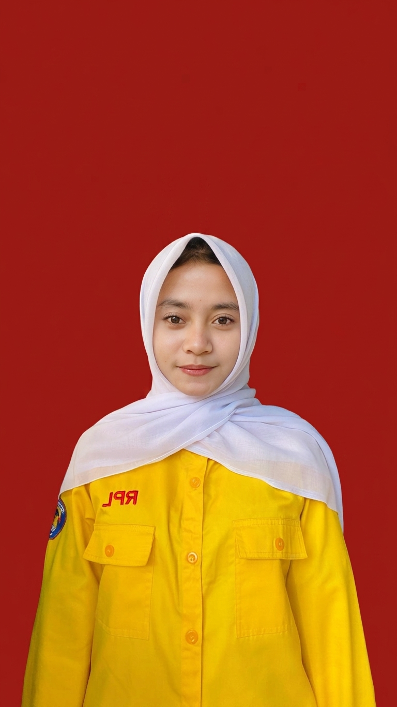

Lulusan PPLG
Menyelesaikan pendidikan di SMKN 1 Kawali jurusan Pengembangan Perangkat Lunak dan Gim (PPLG/RPL).
Catatan pribadi tentang ide & karya
Lulusan PPLG / RPL · SMKN 1 Kawali · Ciamis, Jawa Barat
Lulusan PPLG SMKN 1 Kawali yang menekuni pengembangan web — dari tampilan hingga logika di baliknya.
Terbiasa membangun aplikasi berbasis HTML, CSS, PHP, MySQL, hingga Laravel — dari company profile sampai sistem informasi yang benar-benar digunakan di sekolah.

Menyelesaikan pendidikan di SMKN 1 Kawali jurusan Pengembangan Perangkat Lunak dan Gim (PPLG/RPL).
Menjelajahi antarmuka frontend, logika backend, pengelolaan database, dan alur kerja kolaboratif.
Kumpulan project berbasis web yang dikerjakan selama masa pembelajaran — mandiri maupun kolaborasi tim.
Perkenalan singkat
Halo! Saya Syadrah Titik Qadar, lulusan SMK Negeri 1 Kawali, Kabupaten Ciamis, jurusan Pengembangan Perangkat Lunak dan Gim (PPLG) dengan konsentrasi keahlian Rekayasa Perangkat Lunak. Sejak pertama kali belajar pemrograman, saya menemukan bagian yang paling saya nikmati: membangun tampilan web yang rapi, fungsional, dan nyaman digunakan.
Perjalanan saya dimulai dari HTML & CSS untuk membuat halaman statis, lalu melangkah ke PHP dan MySQL untuk memahami sisi backend serta cara mengelola data. Kini saya terbiasa mengembangkan project dengan Laravel dan Bootstrap, serta mengelola kode bersama-sama menggunakan Git & GitHub.
Saya nyaman bekerja secara individu maupun dalam tim. Beberapa project saya bangun dari nol secara mandiri, sementara sisanya adalah hasil kolaborasi tim yang kini digunakan secara nyata di sekolah. Saat ini, saya siap membawa semangat belajar dan pengalaman tersebut ke lingkungan profesional.
Saya telah menyelesaikan Praktik Kerja Lapangan (PKL) di industri yaitu PT. Inovindo Digital Media sebagai bagian dari pendidikan. Pengalaman ini memperkuat pemahaman saya tentang alur kerja profesional, kolaborasi tim, dan pengembangan web secara nyata. Kini saya terbuka untuk peluang kerja, magang, maupun kolaborasi project di bidang pengembangan web.
Menyampaikan ide dengan jelas dan runtut.
Nyaman berbagi peran dan tugas dalam tim.
Tenang mencari solusi saat menemui error.
Disiplin membagi prioritas dan deadline.
Cepat menyesuaikan diri dengan hal dan tool baru.
Perhatian pada detail kecil antarmuka dan kode.
Kumpulan project berbasis web yang saya kerjakan selama masa pembelajaran — baik secara mandiri maupun kolaborasi tim.
Arsip portofolio · 04 entriKolaborasi tim mengembangkan sistem informasi buku induk sekolah untuk membantu pengelolaan data siswa secara digital. Sistem ini merupakan real project yang telah digunakan secara nyata di lingkungan SMKN 1 Kawali.
Project Uji Kompetensi Keahlian (UKK) yang dikerjakan secara individu: membangun website company profile dari nol — mulai dari perancangan halaman, slicing HTML & CSS, hingga backend dinamis dengan PHP dan Laravel. Data perusahaan dikelola melalui basis data MySQL sehingga konten mudah diperbarui tanpa menyentuh kode.
Sistem donasi berbasis web untuk tugas akhir mata pelajaran pemrograman. Mengimplementasikan sisi frontend dan backend secara mandiri menggunakan PHP dan MySQL — mencakup formulir donasi, pencatatan transaksi ke basis data, serta halaman admin untuk memantau donasi yang masuk.
Aplikasi pembukuan sederhana berbasis web untuk membantu pencatatan keuangan usaha: mencatat pemasukan dan pengeluaran, lalu merekapnya menjadi laporan yang mudah dibaca. Dibangun dengan HTML, CSS, dan PHP dengan struktur kode yang terorganisir agar mudah dikembangkan ke depannya.
Percakapan berikutnya
Terbuka untuk peluang kerja, magang, kolaborasi project, atau sekadar obrolan seputar web development. Hubungi saya lewat salah satu kanal berikut — saya akan senang membalasnya!